9 Running your survey
Previewing the survey does not collect data (that annoying yellow bar has told you that).
It is safe to activate your survey while you are developing it. Click the green Activate survey button to do so.
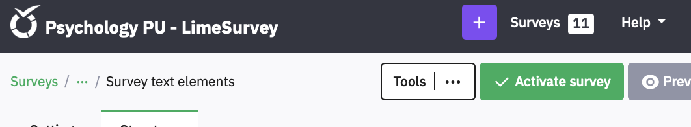
Despite the scary warnings in the next pop up, you can add and delete things, if you deactivate the survey again, though this will delete any data you’ve collected in the meantime so you should not actually collect real data until you have thoroughly pilot tested the survey and checked its data file. Check that Date stamp is On, so you can work out when each participant did the survey. Leave the rest Off. You do want Open-access mode unless you are using a Limesurvey Panel to invite people from a mailing list you have set up (not in this guide).
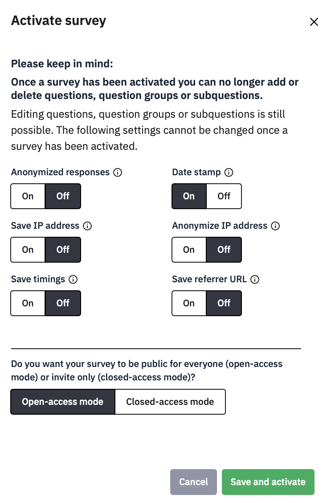
9.1 Downloading data
You can download your data at any time from the Settings – Survey menu option Responses.
Clicking this brings up a screen with information about how many responses you have and some options to display them on-screen. However, you simply need to click the Export button at the top of the screen, and choose Export responses.
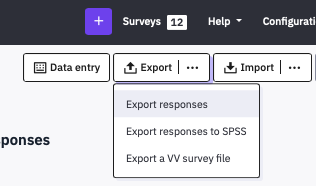
After that the flexibility makes it look complicated, but if you leave everything at their defaults you will get a plain CSV file that anything can read. The main choice you need to make is on the right, under Headings : Export questions as:
Here is an example of how a survey’s data exports with each option:
Question Code:
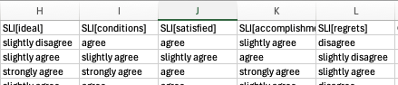
Abbreviated question text:

Full question text:
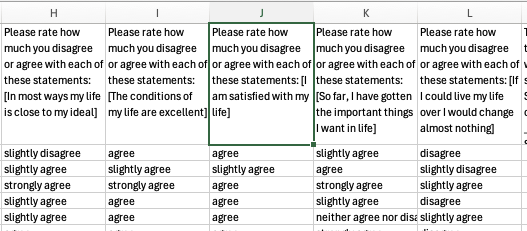
Question code and question text:
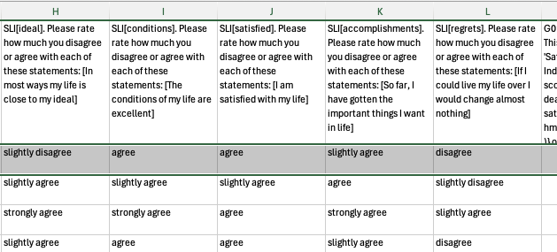
The last option, Question code and question text, is the best from an Open-Science point of view, especially if you leave Export responses as Full answers, as I have here.
This data file is fully comprehensible in its own right, without needing a copy of the survey to consult to understand what was asked or what the answers mean. For analytic purposes, the header row cells start with the Question name, the subquestion code in brackets, followed by the Question text, and then the subquestion text in brackets.
It is possible to split this text up in a program like R to keep the codes as variable names (e.g., MTF_01 and MTF_02 while preserving the question and subquestion text as a vector for labelling output.
For example, here is some R code to do this:
data<-read.csv("results-survey352368.csv") # read the limesurvey data
var.item<-tibble(cols=colnames(data)) %>% # make a tibble from data's columnames
mutate(cols=str_replace_all(cols,"[","_"), # replace [ with _
cols=str_replace_all(cols,"]",""), # delete ]
var=str_extract(cols, "[A-Za-z0-9_]*."), # select all text up to first dot
var=str_sub(var, 1, -2), # delete the dot
item=str_sub(cols, str_length(var)+3,-1)) # select everything after the dot
colnames(data)=var.item$var # set columnames in data to varIt is also advisable to export the full answer text, rather than Answer codes. Answer Codes turns the data into whatever you had entered in the Codes field of the question or numerical values if you had left them blank, as here:
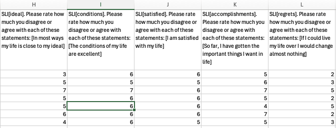
Answer codes look easy to analyse, but what do they mean? Which ones need to be reverse coded? Text is meaningful, so export it and make the effort to recode it to numbers in your analysis script. Putting the data and script together makes your research transparent, and mistakes can be spotted and corrected.
For example, this R code finds all items beginning MTF, recodes their likert scale to numbers, reverse codes some items, and finds the mean for each participant:
mtf<-data %>% select(participant, starts_with("MTF")) %>% # select ID and MTF vars
pivot_longer(-participant) %>% # make longer (participant, name, value)
mutate(rating=case_when( # create a new variable called rating
value=="Strongly agree" ~ 5, # matching each text to a number
value=="Agree" ~ 4,
value=="Neither agree nor disagree" ~ 3
value=="Disagree" ~ 2,
value=="Strongly disagree" ~ 1,
T ~ NA), # anything else is NA
rating = ifelse(name %in% c("MTF_01", "MTF_03", "MTF_09"), # if the name is in this list
6-rating, # reverse-code the item
rating) # else leave it alone
) %>%
group_by(participant) %>% # for each ID
summarise(mtf=mean(rating, na.rm=T)) # find mean rating, removing NA9.3 Stopping your survey
When you have finished piloting your survey and need to make changes, or when you have run it properly and finished collecting data, you can Stop the survey to prevent any more responses being made. When it is running the green Activate Survey becomes a red button:
Clicking this brings up a choice:
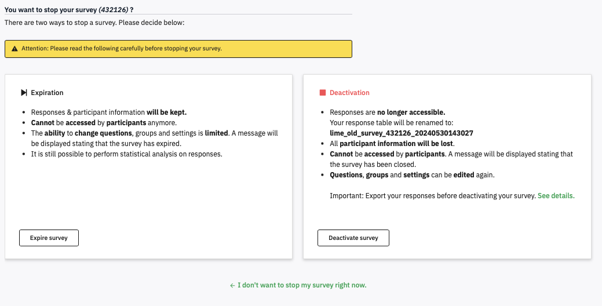
If you have indeed finished collecting data, then the left hand Expire Survey is a sensible option to make. Your data is easy to access, but you cannot make many changes to the survey.
If you have just finished piloting and not yet run the survey, then you want to take the right-hand option, to Deactivate survey – but this will make the data harder to find (it is not deleted). Choose this one if you have been piloting to collect test data, and you have already exported the fully labelled Question code & question text version with Full answers.
If you do deactivate, then you’ll see this:
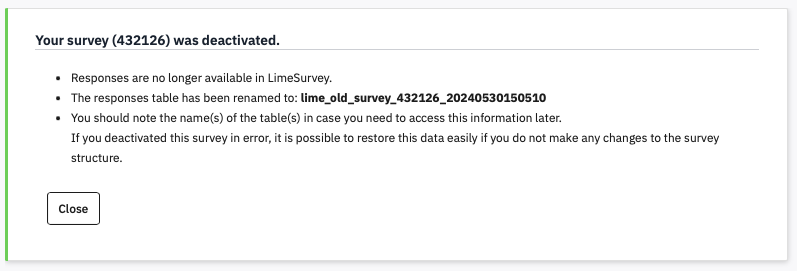
Do save a screen shot of this and name it sensibly, in case you do want to find that data. All those numbers are a code for the survey, and then a date and timestamp.
To load it up again, Activate the survey, go to Responses, and click Import. Choose Import responses from a deactivated survey table.
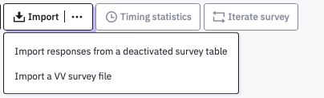
I’ve tried this and it works – if there is more than one old dataset then you can choose which you want to reload. Note the warnings though – only some editing changes to the survey can be managed. If you’ve made other changes, the data may be lost or mangled.
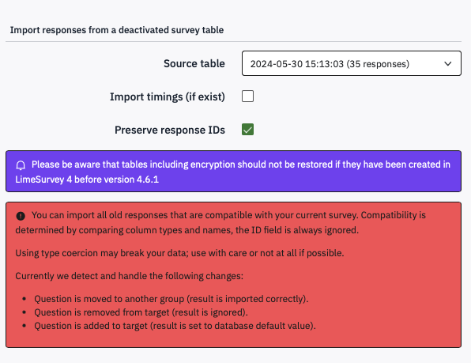